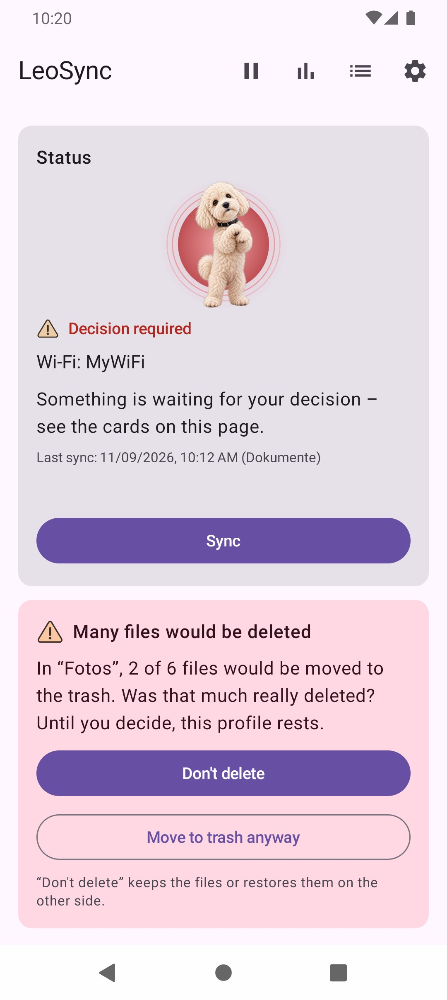

How the synchronization works
Besides photo backup, LeoSync offers profiles of the type Sync a folder. They keep any folder on the phone in step with a folder on your PC or NAS, 1:1 and with all file types. You choose the direction: phone to PC, PC to phone, or both ways.
For two-way sync, LeoSync compares three states: phone, PC and the state of the last sync. That is how the app knows what is new, changed or deleted. If the same file was changed on both sides, you decide which version wins; the other one goes to the trash.
SMB and connecting
Transfers run via SMB2/SMB3 directly between your phone and your PC or NAS. In the profile you enter the share (for example \\192.168.1.20\Data), user and password; the IP address is more reliable than a .local name. Test connection shows right away whether everything is correct. If you wish, LeoSync also recognises your PC by a PC ID before the user name and password are sent.
Supported features
- Any folders and file types, one-way or two-way.
- Filters: sync only certain files or exclude files, with patterns such as
*.pdforTemp/**. - Apply deletions (optional): deleted and replaced files go to the
@LeoSync-Bintrash and can be restored. - Safety brake: if a folder is missing or more than 20 % of the files would be deleted, LeoSync stops and asks.
- Version protection: the overwritten version on the other side stays in the trash.
- Simulation: shows beforehand what would happen, without transferring anything.
- Robust: interrupted transfers are resumed, and up to four files run in parallel. File modification dates are preserved.


Configuration options
- Direction: phone → PC, PC → phone or both ways. If you change the direction of an existing profile, LeoSync shows what changes before saving.
- Check interval: one setting for all folder profiles under Settings → Transfer, 15 to 1440 minutes (default 60).
- Trash: empty after 0 to 3650 days (0 = never), default 30 days.
- Safety brake: threshold from 1 to 100 %.
- Triggers: automatic on the Wi-Fi you entered, optionally over mobile data or VPN, only while charging, pausable, or by hand.
The help describes setting up the PC step by step.
Frequently asked questions
Can LeoSync sync folders in both directions?
Yes. For a folder profile you choose phone to PC, PC to phone or both ways. With two-way sync, LeoSync compares phone, PC and the last state and detects conflicts.
What happens if a file was changed on both sides?
LeoSync asks you which version wins. The other version goes to the trash and can be restored.
Are deleted files removed permanently right away?
No. Replaced and deleted files go to the @LeoSync-Bin trash and are only emptied after the set period, by default after 30 days.
Which file types are supported?
All of them. With filters you can include or exclude certain files.